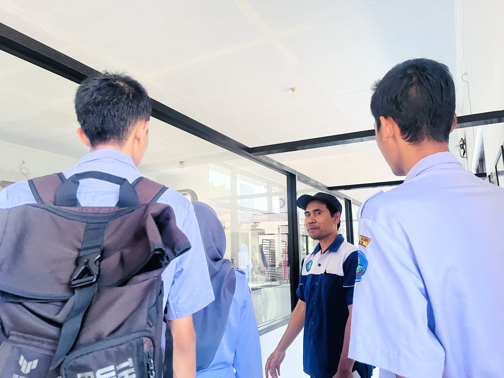
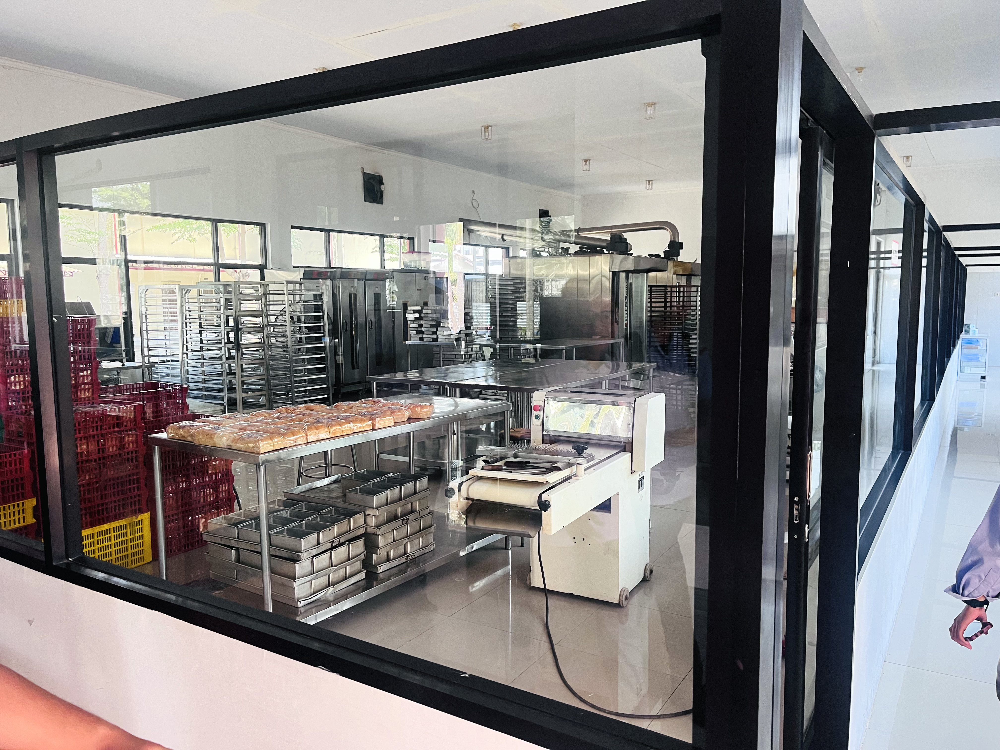

Kesabaran
Memberi waktu pada adonan untuk berkembang dan membentuk rasa terbaiknya.
CERITA RASA KARYA
Berawal dari kecintaan pada roti, kami merawat setiap proses dengan bahan pilihan, keahlian, dan waktu yang cukup.
Kenali perjalanan kami
AKAR KAMI
Rasa Karya lahir dari semangat untuk menghadirkan roti yang dibuat dengan perhatian. Kami menggabungkan teknik artisan dengan bahan lokal pilihan, tanpa tergesa melewati prosesnya.
SEBUAH PERJALANAN
Eksperimen kecil memperkenalkan kami pada keajaiban ragi alami.
Dapur pertama dibuka untuk membagikan roti yang dibuat dengan sepenuh hati.
Kami mulai melayani lebih banyak bisnis dan komunitas.
YANG KAMI PERCAYA
Hal-hal sederhana yang menjadi pegangan kami, dari dapur sampai ke meja Anda.
Memberi waktu pada adonan untuk berkembang dan membentuk rasa terbaiknya.
Memilih bahan yang baik dan proses yang dapat kami pertanggungjawabkan.
Menyambut setiap orang dengan keramahan yang terasa seperti pulang.
DI BALIK DAPUR KAMI
Dapur yang terjaga, peralatan yang mendukung, dan tim yang terus belajar menjaga kualitas di setiap proses.
Jelajahi peluang bersama
MARI BERTUMBUH BERSAMA